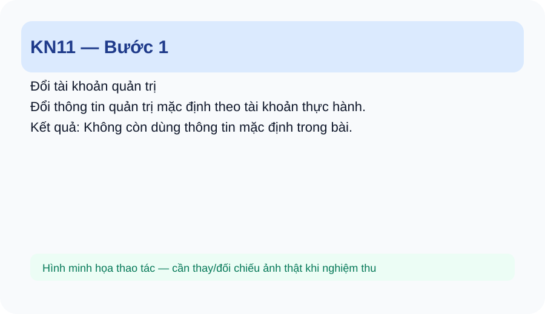
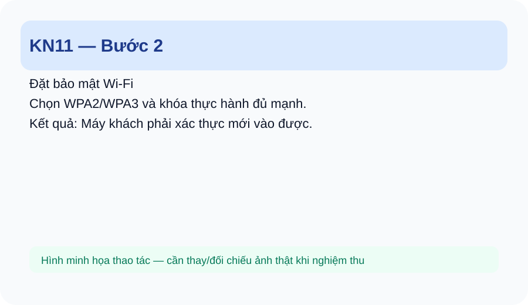
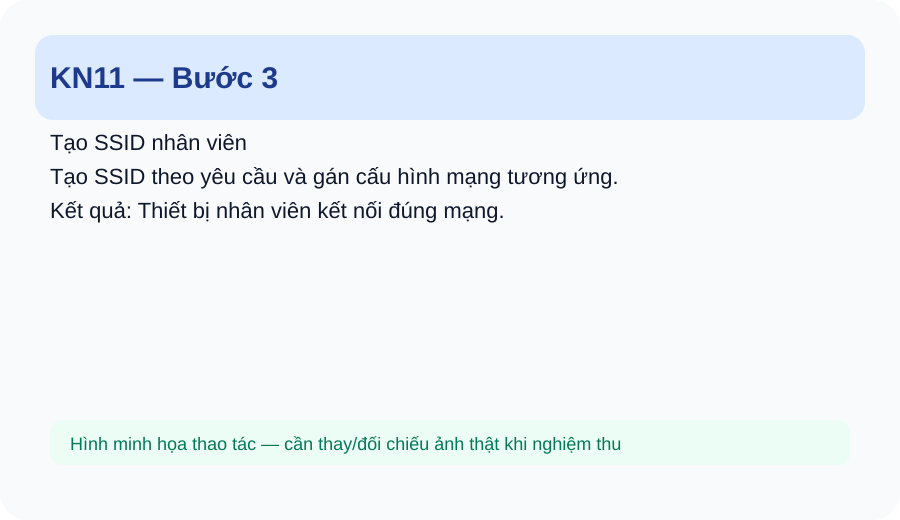
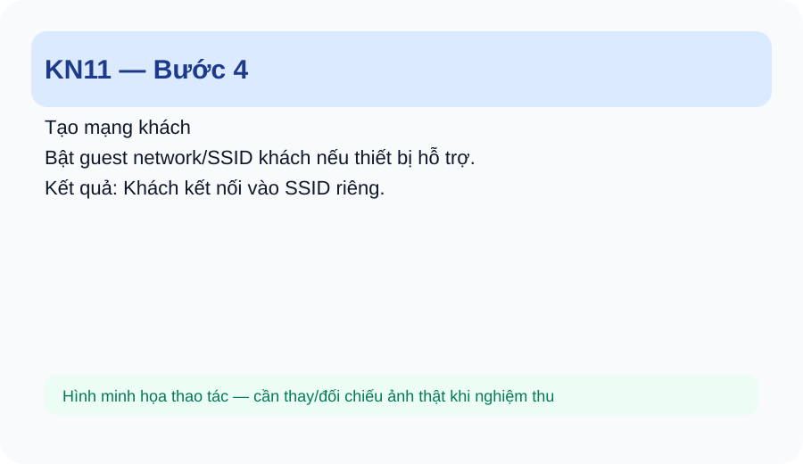
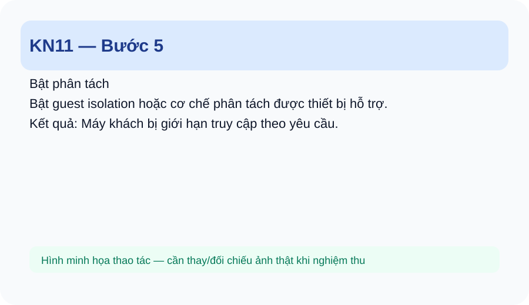
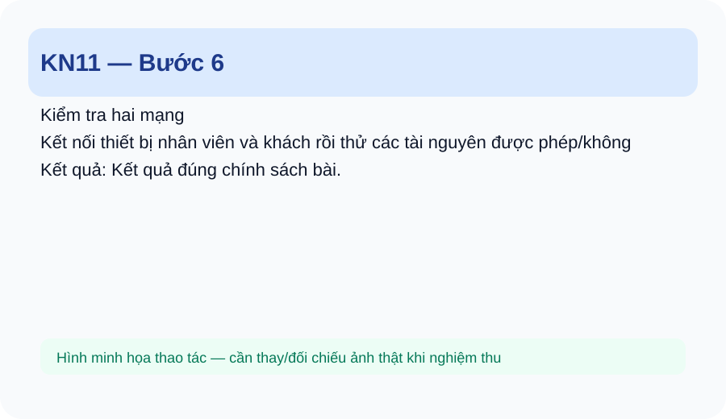

<!doctype html><html lang="vi"><head><meta charset="utf-8"><meta name="viewport" content="width=device-width,initial-scale=1"><title>KN11 — Bảo mật và phân tách Wi-Fi</title><style>:root{--b:#1d4ed8;--ok:#047857;--w:#b45309;--d:#be123c;--ink:#0f172a;--line:#e2e8f0}*{box-sizing:border-box}body{margin:0;font-family:Inter,Arial,sans-serif;background:#f8fafc;color:var(--ink);line-height:1.65}.wrap{max-width:1080px;margin:auto;padding:22px 16px 60px}.hero{background:linear-gradient(135deg,#0f172a,#1e3a8a);color:white;border-radius:24px;padding:30px;margin-bottom:18px}.hero h1{font-size:clamp(28px,5vw,46px);line-height:1.1;margin:8px 0}.hero p{color:#dbeafe}.nav{position:sticky;top:0;z-index:4;background:#fff;border:1px solid var(--line);padding:10px 14px;border-radius:14px;margin-bottom:18px}.nav a{margin-right:14px;color:#1d4ed8;font-weight:700;text-decoration:none}.box{background:white;border:1px solid var(--line);border-radius:18px;padding:20px;margin:16px 0}.goal{background:#eff6ff;border-left:5px solid var(--b)}.step{border:1px solid #cbd5e1;border-radius:18px;background:#fff;margin:18px 0;overflow:hidden}.step h3{margin:0;padding:15px 18px;background:#f1f5f9}.step .body{padding:18px}.step img{width:100%;max-width:900px;border:1px solid #e2e8f0;border-radius:14px;background:#f8fafc}.ok{background:#ecfdf5;border-left:5px solid var(--ok);padding:12px 15px;border-radius:10px}.wrong{background:#fff1f2;border-left:5px solid var(--d);padding:12px 15px;border-radius:10px}.warn{background:#fff7ed;border-left:5px solid var(--w);padding:12px 15px;border-radius:10px}table{width:100%;border-collapse:collapse;background:white}th,td{border:1px solid #e2e8f0;padding:9px;vertical-align:top}th{background:#f1f5f9}.check{font-size:17px}.small{font-size:14px;color:#475569}@media(max-width:700px){.nav a{display:inline-block;margin:3px 8px 3px 0}.hero{padding:22px}.box{padding:15px}}code{background:#eef2ff;padding:2px 6px;border-radius:6px}</head><body><main class="wrap"><section class="hero"><div>KN11 • KỸ NĂNG NGHỀ</div><h1>Bảo mật và phân tách Wi-Fi</h1><p>Thiết lập Wi-Fi an toàn hơn và tách mạng nhân viên/khách theo yêu cầu bài thực hành.</p></section><nav class="nav"><a href="index.html">Trang chủ</a><a href="_sidebar.md">Lộ trình</a><a href="#steps">Các bước</a><a href="#practice">Thực hành</a><a href="#assessment">Đánh giá</a></nav><section class="box goal"><h2>1. Em sẽ làm được gì?</h2><ul><li>Đổi tài khoản quản trị mặc định theo yêu cầu.</li><li>Thiết lập WPA2/WPA3.</li><li>Tạo SSID nhân viên và khách khi thiết bị hỗ trợ.</li><li>Áp dụng guest isolation/VLAN hoặc cơ chế phân tách được thiết bị hỗ trợ.</li><li>Kiểm tra khả năng truy cập giữa các mạng.</li></ul></section><section class="box"><h2>2. Chuẩn bị</h2><ul><li>Router/AP hỗ trợ cấu hình bảo mật/guest.</li><li>Sơ đồ mạng và yêu cầu phân tách.</li><li>Hai nhóm máy khách thử nghiệm.</li></ul></section><section class="box"><h2>3. Kiến thức tối thiểu</h2><ul><li>SSID, WPA2/WPA3.</li><li>Mật khẩu quản trị và mật khẩu Wi-Fi.</li><li>Guest network.</li><li>Isolation.</li><li>VLAN ở mức nhận biết khi thiết bị hỗ trợ.</li><li>Nguyên tắc không cho mạng khách truy cập tài nguyên nội bộ khi yêu cầu bài đặt ra.</li></ul></section><section class="box"><h2>4. Nhìn thao tác mẫu</h2><p>Quan sát: đổi tài khoản quản trị → cấu hình bảo mật → tạo SSID khách → bật cơ chế cách ly → kiểm tra từ hai máy.</p></section><section id="steps"><h2>5. Làm từng bước</h2><article class="step"><h3>Bước 1. Đổi tài khoản quản trị</h3><div class="body"><p><strong>Em làm:</strong> Đổi thông tin quản trị mặc định theo tài khoản thực hành.</p><p class="small">📷 <strong>Gợi ý ảnh thật:</strong> chụp cận cảnh đúng vị trí tay/dụng cụ/kết quả của bước này.</p><div class="ok"><strong>Kết quả đúng:</strong> Không còn dùng thông tin mặc định trong bài.</div><div class="wrong"><strong>Nếu sai:</strong> Quên thông tin: dùng quy trình khôi phục của thiết bị theo hướng dẫn giáo viên.</div></div></article><article class="step"><h3>Bước 2. Đặt bảo mật Wi-Fi</h3><div class="body"><p><strong>Em làm:</strong> Chọn WPA2/WPA3 và khóa thực hành đủ mạnh.</p><p class="small">📷 <strong>Gợi ý ảnh thật:</strong> chụp cận cảnh đúng vị trí tay/dụng cụ/kết quả của bước này.</p><div class="ok"><strong>Kết quả đúng:</strong> Máy khách phải xác thực mới vào được.</div><div class="wrong"><strong>Nếu sai:</strong> Chọn chế độ không phù hợp: đổi về chế độ được thiết bị hỗ trợ.</div></div></article><article class="step"><h3>Bước 3. Tạo SSID nhân viên</h3><div class="body"><p><strong>Em làm:</strong> Tạo SSID theo yêu cầu và gán cấu hình mạng tương ứng.</p><p class="small">📷 <strong>Gợi ý ảnh thật:</strong> chụp cận cảnh đúng vị trí tay/dụng cụ/kết quả của bước này.</p><div class="ok"><strong>Kết quả đúng:</strong> Thiết bị nhân viên kết nối đúng mạng.</div><div class="wrong"><strong>Nếu sai:</strong> Sai SSID: kiểm tra lại cấu hình.</div></div></article><article class="step"><h3>Bước 4. Tạo mạng khách</h3><div class="body"><p><strong>Em làm:</strong> Bật guest network/SSID khách nếu thiết bị hỗ trợ.</p><p class="small">📷 <strong>Gợi ý ảnh thật:</strong> chụp cận cảnh đúng vị trí tay/dụng cụ/kết quả của bước này.</p><div class="ok"><strong>Kết quả đúng:</strong> Khách kết nối vào SSID riêng.</div><div class="wrong"><strong>Nếu sai:</strong> Không có guest feature: ghi rõ giới hạn thiết bị, không giả định có.</div></div></article><article class="step"><h3>Bước 5. Bật phân tách</h3><div class="body"><p><strong>Em làm:</strong> Bật guest isolation hoặc cơ chế phân tách được thiết bị hỗ trợ.</p><p class="small">📷 <strong>Gợi ý ảnh thật:</strong> chụp cận cảnh đúng vị trí tay/dụng cụ/kết quả của bước này.</p><div class="ok"><strong>Kết quả đúng:</strong> Máy khách bị giới hạn truy cập theo yêu cầu.</div><div class="wrong"><strong>Nếu sai:</strong> Khách vẫn truy cập LAN: kiểm tra isolation/VLAN/firewall theo thiết bị.</div></div></article><article class="step"><h3>Bước 6. Kiểm tra hai mạng</h3><div class="body"><p><strong>Em làm:</strong> Kết nối thiết bị nhân viên và khách rồi thử các tài nguyên được phép/không phép.</p><p class="small">📷 <strong>Gợi ý ảnh thật:</strong> chụp cận cảnh đúng vị trí tay/dụng cụ/kết quả của bước này.</p><div class="ok"><strong>Kết quả đúng:</strong> Kết quả đúng chính sách bài.</div><div class="wrong"><strong>Nếu sai:</strong> Kết quả ngược: kiểm tra cấu hình phân tách.</div></div></article></section><section class="box"><h2>6. Kiểm tra kết quả</h2><ol><li>Tài khoản quản trị được xử lý đúng.</li><li>WPA2/WPA3 phù hợp.</li><li>SSID đúng.</li><li>Guest network đúng nếu hỗ trợ.</li><li>Phân tách được kiểm tra thực tế.</li><li>Không giả định tính năng thiết bị không có.</li></ol></section><section class="box"><h2>7. Lỗi thường gặp và cách sửa</h2><table><tr><th>Lỗi</th><th>Dấu hiệu</th><th>Cách kiểm tra/sửa</th></tr><tr><td>Dùng tài khoản mặc định</td><td>Thông tin quản trị vẫn mặc định.</td><td>Đổi tài khoản theo bài.</td></tr><tr><td>Guest truy cập LAN</td><td>Phân tách chưa hoạt động.</td><td>Kiểm tra isolation/VLAN/firewall.</td></tr><tr><td>Sai SSID</td><td>Thiết bị vào nhầm mạng.</td><td>Đối chiếu tên và cấu hình.</td></tr><tr><td>Thiết bị không hỗ trợ tính năng</td><td>Menu không có chức năng.</td><td>Ghi rõ giới hạn và dùng cơ chế mà thiết bị thực sự hỗ trợ.</td></tr></table></section><section id="practice" class="box"><h2>8. Thực hành 3 mức</h2><ol><li>Làm theo: bảo mật một SSID bằng WPA2/WPA3.</li><li>Tự làm: tạo SSID nhân viên và khách.</li><li>Xử lý lỗi: guest truy cập được tài nguyên nội bộ; tìm nguyên nhân.</li></ol></section><section class="box"><h2>9. Checklist</h2><ul class="check"><li>☐ Tài khoản quản trị được xử lý đúng.</li><li>☐ WPA2/WPA3 phù hợp.</li><li>☐ SSID đúng.</li><li>☐ Guest network đúng nếu hỗ trợ.</li><li>☐ Phân tách được kiểm tra thực tế.</li><li>☐ Không giả định tính năng thiết bị không có.</li></ul></section><section id="assessment" class="box"><h2>10. Đánh giá năng lực</h2><table><tr><th>Mức</th><th>Yêu cầu</th><th>Minh chứng</th></tr><tr><td>Làm theo</td><td>Thiết lập bảo mật theo mẫu.</td><td>Kết nối đúng.</td></tr><tr><td>Tự làm</td><td>Thiết lập hai SSID theo tình huống.</td><td>Phân tách đúng.</td></tr><tr><td>Xử lý lỗi</td><td>Sửa lỗi guest truy cập LAN.</td><td>Xác định đúng cơ chế lỗi.</td></tr></table></section><div class="box small"><strong>Trạng thái:</strong> Draft/Review — nội dung, phiên bản Windows/thiết bị và ngưỡng đánh giá cần giáo viên nghiệm thu trước khi coi là chuẩn chính thức.</div></main></body></html>